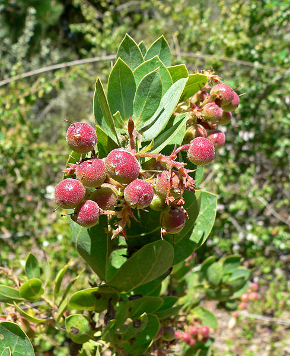
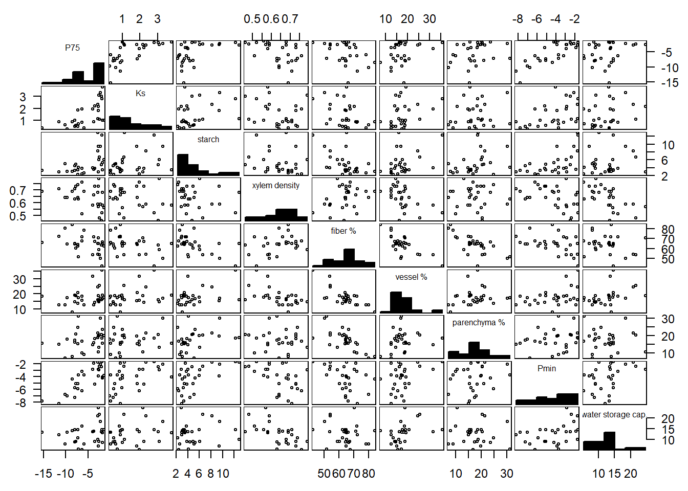
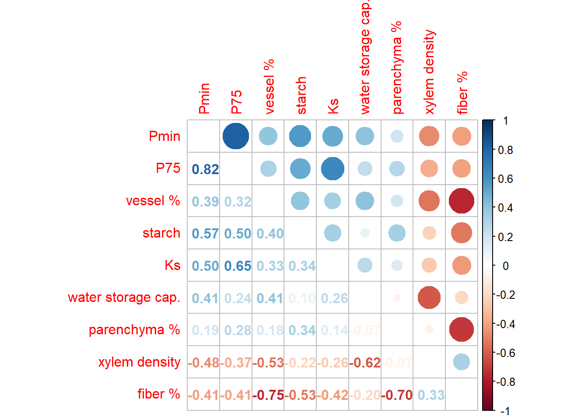

6 Case study 6
6.1 A Case Study: Exploring Xylem Characteristics in Shrub Species
Introduction
In plants, the function of the xylem tissue is to transport water and minerals, and this forms part of a network that ensures that the plant can transport essential resources and maintain its growth and development. A study by Pratt et al. (2021) investigated the trade-offs (costs and benefits of different traits) among different xylem functions in shrub species and how they are influenced by minimum hydrostatic pressures experienced by plants in the field. The study, which used structural equation modeling, showed the importance of understanding that the roles of different cell types in the xylem are important for recognizing the functional trade-offs that govern xylem traits, and emphasized the critical role of minimum hydrostatic pressures in plant growth and development.
For their study, various plant physiological measurements for 29 different plant species were collected. Below is a list and small description of each variable:
P75: the water potential at 75% loss of its hydraulic conductivity (MPa).
Ks: a measure of xylem-specific conductivity. conductivity (kg s\(^{-1}\) MPa\(^{-1}\) m\(^{-1}\)).
Starch: amount of starch content in the xylem tissues (%).
Xylem density: measure of the density of xylem (dry mass/tissue volume) .
Fiber percentage: the proportion of fibers in the xylem tissue.
Vessel percentage: the proportion of vessels in the xylem tissue.
Parenchyma percentage: the proportion of parenchyma cells in the xylem tissue.
Pmin: Minimum level of dehydration a plant can experience (MPa).
Water storage capacity: the capacity of the xylem tissue to store water \(\Delta \text{Relative water content}/\Delta \text{MPa}\).
These variables provide insight on how the xylem functions.
Here, we apply principal component analysis (PCA) to determine if we can identify key patterns in these data, which describe various aspects related to the structure, function, and properties of xylem, as well as underlying factors or dimensions that may be driving the variation in the data. The data are shown in the table below.
Summary of findings
Numerical and graphical summaries of the plant physiological variables are provided below:


The graphical and numerical summaries show that the variables have both positive and negative correlations, with many showing clear linear associations, although the strength of a given linear relationship depends on which pair of variables is considered. There are 84 possible 3D scatterplots that could be examined when dealing with the nine variables, so it is difficult to examine beyond pairwise relationships. That is, graphical or numerical summaries provide limited insight when attempting to explore the interdynamics of the variables when the data set is very large.
To better understand the characteristics of xylem tissue in shrub species, it is important to identify the underlying factors or dimensions that drives the variation in the data. By identifying these factors, we can more easily interpret the data set, potentially revealing underlying patterns, and gaining insights into how these shrubs respond to water availability in a semi-arid chaparral environment. Principal component analysis (PCA) is a useful tool for achieving this goal. In this case study, PCA is applied to the plant physiological measurements to simplify the interpretation of the variables and reveal the underlying patterns that drive the variation in the data
According to Kaiser’s rule, three principal components capture most of the variation contained in these nine variables. In fact, about 76% of the variation in the plant physiological variables is explained by the first three principal components, and this is an acceptably large percentage.
To simplify the interpretation of the principal components, varimax rotation is applied. Overall, the first principal component (PC) is viewed as an indicator of a shrub’s adaptability to drought conditions with respect to water efficiency, while the second PC is viewed as a measure of the adaptability of shrubs to drought conditions with respect to mechanical strength and water storage. The third PC, on the other hand, may be considered as an indicator of the adaptability of shrubs to drought conditions in terms of their capacity to balance parenchyma and fiber to maintain essential plant functions. These findings provide a view into how these shrubs respond to water availability in a semi-arid chaparral environment.
It is important to note that PCA is an exploratory method rather than an inferential one. While it can reveal patterns and relationships in the data, it does not provide statistically significant conclusions or results. Overall, PCA is a powerful method for exploring complex datasets and revealing underlying patterns, but it should not be used as the sole basis for making conclusions.
Pratt, RB, AL Jacobsen, MI Percolla, ME De Guzman, CA Traugh, and MF Tobin. 2021. “Trade-Offs Among Transport, Support, and Storage in Xylem from Shrubs in a Semiarid Chaparral Environment Tested with Structural Equation Modeling.” Proceedings of the National Academy of Sciences 118 (33).